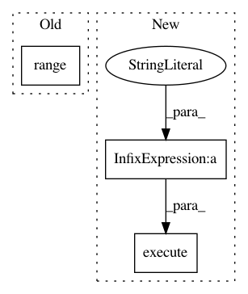

d137ae8f6e210258a5d6d5925289c15cf07c3be9,src/geweke_testing.py,,create_prior_gen,#Any#Any#Any#Any#Any#,64
Before Change
def create_prior_gen(bdb, target_metamodel, schema, column_names, prior_samples):
table = create_empty_table(bdb, column_names)
prior_gen = create_generator(bdb, table, target_metamodel, schema)
prior_gen.initialize_models(range(prior_samples))
return prior_gen
def create_geweke_chain_generator(bdb, target_metamodel, schema, column_names,
After Change
def create_prior_gen(bdb, target_metamodel, schema, column_names, prior_samples):
table = create_empty_table(bdb, column_names)
prior_gen = create_generator(bdb, table, target_metamodel, schema)
init_models_bql = """
INITIALIZE %s MODELS FOR %s
""" % (prior_samples, sqlite3_quote_name(prior_gen.name))
bdb.execute(init_models_bql)
return prior_gen
def create_geweke_chain_generator(bdb, target_metamodel, schema, column_names,
target_cells, geweke_samples, geweke_iterates):
In pattern: SUPERPATTERN
Frequency: 3
Non-data size: 3
Instances
Project Name: probcomp/bayeslite
Commit Name: d137ae8f6e210258a5d6d5925289c15cf07c3be9
Time: 2015-08-27
Author: axch@mit.edu
File Name: src/geweke_testing.py
Class Name:
Method Name: create_prior_gen
Project Name: probcomp/bayeslite
Commit Name: d137ae8f6e210258a5d6d5925289c15cf07c3be9
Time: 2015-08-27
Author: axch@mit.edu
File Name: src/geweke_testing.py
Class Name:
Method Name: create_geweke_chain_generator
Project Name: pymc-devs/pymc3
Commit Name: 5b2766aae94c0615aef2c8d6ac178428e6d28745
Time: 2008-07-20
Author: fonnesbeck@15d7aa0b-6f1a-0410-991a-d59f85d14984
File Name: pymc/database/mysql.py
Class Name: Trace
Method Name: _initialize